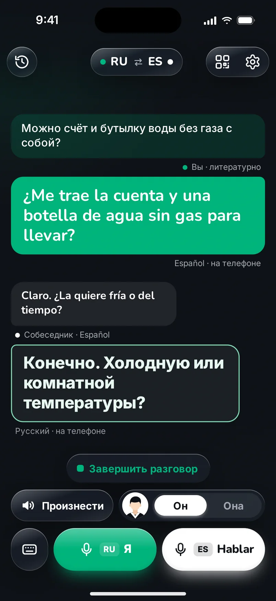
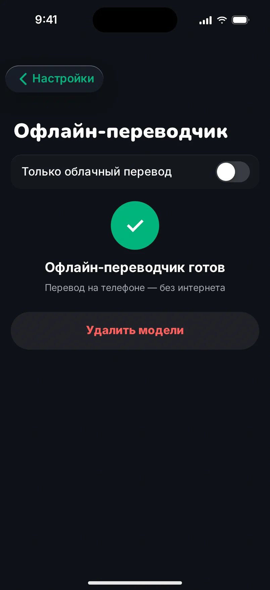

Скажите как можете — прозвучите безупречно.
Parrlo сначала понимает, что вы хотели сказать, и только потом переводит.
реальный пример
Мы переводим не слова. Мы переводим то, что вы хотели сказать.
Живая речь неидеальна. В ней запинки, повторы, слова, начатые и брошенные на полпути. Parrlo не повторяет всё это на чужом языке. Он слушает до конца, ловит смысл и записывает вашу мысль так, как сказал бы человек, хорошо владеющий языком: чистой, спокойной, грамотной фразой. И только её переводит.
- Запинки остаются у вас.
- Повторы исчезают.
- Смысл доходит целиком.
Примеры из наших внутренних проверок (ES⇄RU). Перевод на других языках сайта дан для чтения.
Cadaqués, а не «Каденас».
Вы говорите «на Каденас». Parrlo слышит Cadaqués. Он разбирается, о каком месте идёт речь, и называет его так, как привыкли писать и говорить местные. То же с улицами, городами, магазинами, станциями: названия доходят такими, какими их узнает собеседник.
- Cadaqués
- Girona
- Cercanías
- Mercadona
Макет
Ваш голос остаётся вашим.
С вашего согласия Parrlo создаёт копию вашего голоса: достаточно около двух минут чтения вслух. Вы слышите пример, решаете, оставить его или нет, и в любой момент можете удалить голос целиком.
Говорите так, как вам удобно.
- 1
Лицом к лицу.
Разговор идёт по очереди, как с живым переводчиком рядом. Parrlo помнит, кто перед вами, и ставит слова в нужный род.
- 2
По QR-коду.
Покажите собеседнику QR-код на экране. Он наводит камеру, и разговор открывается в его браузере. Ничего устанавливать и регистрироваться не нужно.
- 3
В переписке.
Пришло сообщение в WhatsApp на чужом языке? Вставьте его в Parrlo или отправьте через «Поделиться», и вы прочтёте его по-своему. Ответ напишите как получится: Parrlo превратит его в грамотный текст, который останется отправить.


Макет

Макет
Связи нет. Перевод есть.
Обычно перевод происходит в облаке. Но если вы скачали офлайн-переводчик в настройках, Parrlo переведёт и в горах, и в метро, прямо на телефоне.
Ваши разговоры хранятся у вас на телефоне, а данные остаются под вашим контролем.
Говорите как умеете.
Parrlo сделает остальное.
Цены
Free0 €10 фраз в день
Молчун2,99 € / месили 19,99 € / год · Для тех, кто говорит иногда
Болтун5,99 € / месили 29,99 € / год · Для тех, кто говорит много
Начните бесплатно. Отменить подписку можно в любой момент в App Store.
Вопросы и ответы
Что Parrlo делает иначе?
Parrlo сначала превращает распознанную речь в чистый литературный текст, исправляя оговорки и повторы, и только потом переводит.
Работает ли без интернета?
Да. Обычно перевод идёт в облаке, а без связи прямо на телефоне, если вы скачали офлайн-переводчик в настройках.
Нужно ли собеседнику ставить приложение?
Нет. Он сканирует QR-код с вашего экрана, и разговор открывается у него в браузере.
Можно ли переводить сообщения из WhatsApp?
Да, в режиме «Текст»: вставьте сообщение или отправьте через «Поделиться». Ответ Parrlo переведёт на грамотный испанский.
Как используется мой голос?
Голос создаётся, только если вы записали образец и дали согласие. Его можно удалить в любой момент.
Сколько это стоит?
Бесплатно 10 фраз в день. Дальше Молчун или Болтун, цены выше. Вопросы: hello@parrlo.com.